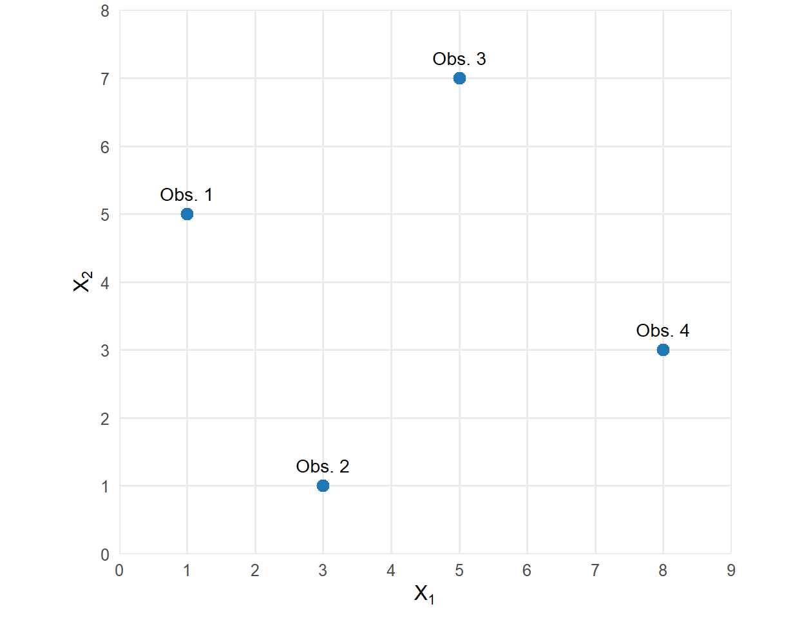

2 Vetores e representação dos dados multivariados
A análise multivariada estuda duas ou mais variáveis medidas em cada unidade observacional. Uma observação descrita por \(p\) variáveis quantitativas pode ser representada por um vetor em \(\mathbb{R}^p\).
Quando são observadas \(n\) unidades, os vetores correspondentes são organizados nas linhas de uma matriz de dados com dimensão \(n\times p\). As linhas representam as observações, e as colunas representam as variáveis.
Essa representação permite interpretar as observações como pontos em \(\mathbb{R}^p\) e estudar suas relações por meio de operações vetoriais e conceitos da geometria euclidiana.
O capítulo apresenta escalares, vetores, matrizes, o espaço \(\mathbb{R}^p\), a matriz de dados, as operações elementares com vetores, o produto interno, a norma, o ângulo e a distância euclidiana.
2.1 Escalares, vetores e matrizes
Uma observação univariada contém o valor de uma variável. Quando várias variáveis são medidas sobre a mesma unidade, seus valores podem ser reunidos em um vetor. Os vetores de diferentes unidades podem ser organizados em uma matriz.
Definição 2.1 (Escalar) Um escalar é um número real:
\[ a\in\mathbb{R}. \]
Em uma aplicação estatística, um escalar pode representar uma medida observada ou o coeficiente de uma expressão matemática.
Em Estatística, uma variável aleatória escalar será representada por uma letra maiúscula, como \(X\). Uma realização dessa variável será representada pela letra minúscula correspondente:
\[ x\in\mathbb{R}. \]
Por exemplo, \(X\) pode representar a massa de uma unidade selecionada aleatoriamente, enquanto \(x=65\) representa um valor observado.
Definição 2.2 (Vetor aleatório e vetor observado) Um vetor aleatório de dimensão \(p\) é uma coleção ordenada de \(p\) variáveis aleatórias:
\[ \boldsymbol{\mathsf{X}} = \begin{bmatrix} X_1\\ X_2\\ \vdots\\ X_p \end{bmatrix} = (X_1,X_2,\ldots,X_p)^\top. \]
Uma realização de \(\boldsymbol{\mathsf{X}}\) é representada pelo vetor observado
\[ \mathbf{x} = \begin{bmatrix} x_1\\ x_2\\ \vdots\\ x_p \end{bmatrix} = (x_1,x_2,\ldots,x_p)^\top \in\mathbb{R}^p. \]
Cada componente \(x_j\) corresponde ao valor observado da variável \(j\), para \(j=1,\ldots,p\).
O vetor aleatório \(\boldsymbol{\mathsf{X}}\) possui uma distribuição conjunta de probabilidades. O vetor \(\mathbf{x}\) contém os valores registrados para uma unidade observacional.
Exemplo 2.1 (Representação de uma observação) Considere uma unidade descrita por três variáveis:
- \(X_1\): idade, em anos;
- \(X_2\): altura, em centímetros;
- \(X_3\): massa corporal, em quilogramas.
O vetor aleatório é
\[ \boldsymbol{\mathsf{X}} = \begin{bmatrix} X_1\\ X_2\\ X_3 \end{bmatrix}. \]
Para uma unidade com \(22\) anos, \(168\) centímetros de altura e \(64\) quilogramas, o vetor observado é
\[ \mathbf{x} = \begin{bmatrix} 22\\ 168\\ 64 \end{bmatrix}. \]
A ordem das componentes identifica a correspondência entre valores e variáveis. Assim,
\[ (22,168,64)^\top \neq (168,22,64)^\top. \]
No primeiro vetor, a idade ocupa a primeira posição. No segundo, essa posição é ocupada pela altura.
Dois vetores \(\mathbf{x},\mathbf{y}\in\mathbb{R}^p\) são iguais quando suas componentes correspondentes são iguais:
\[ \mathbf{x}=\mathbf{y} \quad\Longleftrightarrow\quad x_j=y_j, \qquad j=1,\ldots,p. \]
Definição 2.3 (Matriz) Uma matriz com \(m\) linhas e \(n\) colunas é um arranjo retangular de números:
\[ \mathbf{A} = (a_{ij})_{m\times n} = \begin{bmatrix} a_{11} & a_{12} & \cdots & a_{1n}\\ a_{21} & a_{22} & \cdots & a_{2n}\\ \vdots & \vdots & \ddots & \vdots\\ a_{m1} & a_{m2} & \cdots & a_{mn} \end{bmatrix} \in\mathbb{R}^{m\times n}. \]
O elemento \(a_{ij}\) ocupa a linha \(i\) e a coluna \(j\).
A dimensão de \(\mathbf{A}\) é \(m\times n\). O primeiro número indica a quantidade de linhas, e o segundo indica a quantidade de colunas.
Um vetor-coluna de dimensão \(p\) pode ser tratado como uma matriz \(p\times1\):
\[ \mathbf{x} = \begin{bmatrix} x_1\\ \vdots\\ x_p \end{bmatrix} \in\mathbb{R}^{p\times1}. \]
Sua transposta é um vetor-linha de dimensão \(1\times p\):
\[ \mathbf{x}^\top = \begin{bmatrix} x_1 & \cdots & x_p \end{bmatrix} \in\mathbb{R}^{1\times p}. \]
A Tabela 2.1 resume a notação utilizada no capítulo.
| Objeto | Notação | Descrição |
|---|---|---|
| Escalar | \(a\) | Número real |
| Variável aleatória escalar | \(X\) | Variável que assume valores em \(\mathbb{R}\) |
| Realização escalar | \(x\) | Valor observado de \(X\) |
| Vetor aleatório | \(\boldsymbol{\mathsf{X}}\) | Coleção ordenada de variáveis aleatórias |
| Vetor observado | \(\mathbf{x}\) | Realização de um vetor aleatório |
| Matriz genérica | \(\mathbf{A}\) | Arranjo retangular de números |
| Matriz de dados | \(\mathbf{X}\) | Matriz observada com linhas e colunas associadas às unidades e às variáveis |
Um escalar representa uma medida, um vetor reúne as medidas de uma unidade e uma matriz organiza os valores de várias unidades. A representação dos vetores em \(\mathbb{R}^p\) será desenvolvida na próxima seção.
2.2 O espaço \(\mathbb{R}^p\)
Os valores observados de \(p\) variáveis quantitativas formam um vetor com \(p\) componentes. O conjunto de todos os vetores desse tipo é o espaço euclidiano \(\mathbb{R}^p\).
Definição 2.4 (Espaço euclidiano \(\mathbb{R}^p\)) O espaço euclidiano de dimensão \(p\) é definido por
\[ \mathbb{R}^p = \left\{ (x_1,x_2,\ldots,x_p)^\top: x_j\in\mathbb{R}, \; j=1,\ldots,p \right\}. \]
Cada elemento de \(\mathbb{R}^p\) possui \(p\) coordenadas reais.
Uma observação descrita por \(p\) variáveis é representada por
\[ \mathbf{x}_i = \begin{bmatrix} x_{i1}\\ x_{i2}\\ \vdots\\ x_{ip} \end{bmatrix} \in\mathbb{R}^p, \]
em que \(x_{ij}\) é o valor da variável \(j\) observado na unidade \(i\).
Neste livro, o espaço \(\mathbb{R}^p\) que contém os vetores correspondentes às observações será denominado espaço das observações. Cada ponto representa uma unidade observacional, e cada eixo corresponde a uma variável.
A dimensão do espaço depende do número de variáveis:
- para \(p=1\), as observações são pontos em uma reta;
- para \(p=2\), as observações são pontos em um plano;
- para \(p=3\), as observações são pontos em um espaço tridimensional;
- para \(p>3\), a representação permanece definida em \(\mathbb{R}^p\), sem visualização direta completa.
A Figura 2.1 apresenta os três casos que podem ser representados graficamente.
Exemplo 2.2 (Observação em duas dimensões) Considere duas variáveis quantitativas, \(X_1\) e \(X_2\). A observação \(i\) é representada por
\[ \mathbf{x}_i = \begin{bmatrix} x_{i1}\\ x_{i2} \end{bmatrix} \in\mathbb{R}^2. \]
Se \(x_{i1}=3\) e \(x_{i2}=5\), então
\[ \mathbf{x}_i = \begin{bmatrix} 3\\ 5 \end{bmatrix}. \]
Esse vetor corresponde ao ponto de coordenadas \((3,5)\) no plano.
O número de observações e o número de variáveis possuem funções distintas. Para um conjunto com \(n\) observações e \(p\) variáveis:
- \(n\) determina a quantidade de pontos;
- \(p\) determina a dimensão do espaço ambiente.
As \(n\) observações formam uma nuvem de pontos em \(\mathbb{R}^p\):
\[ \mathbf{x}_1,\mathbf{x}_2,\ldots,\mathbf{x}_n \in\mathbb{R}^p. \]
A dimensão ambiente é igual a \(p\). A nuvem pode ocupar uma região de dimensão inferior quando existem relações lineares ou redundâncias entre as variáveis.
A posição relativa dos pontos depende das coordenadas utilizadas e das escalas das variáveis. Produto interno, norma, ângulo e distância serão introduzidos posteriormente para descrever essas relações.
Os vetores correspondentes às \(n\) observações serão organizados em uma matriz de dados na próxima seção.
2.3 Representação matricial de um conjunto de dados
Considere \(n\) unidades observacionais descritas pelas mesmas \(p\) variáveis quantitativas. A observação \(i\) é representada pelo vetor
\[ \mathbf{x}_i = \begin{bmatrix} x_{i1}\\ x_{i2}\\ \vdots\\ x_{ip} \end{bmatrix} \in\mathbb{R}^p, \qquad i=1,\ldots,n. \]
Os vetores observados podem ser organizados nas linhas de uma matriz.
Definição 2.5 (Matriz de dados) A matriz de dados de \(n\) observações e \(p\) variáveis é definida por
\[ \mathbf{X} = \begin{bmatrix} \mathbf{x}_1^\top\\ \mathbf{x}_2^\top\\ \vdots\\ \mathbf{x}_n^\top \end{bmatrix} = \begin{bmatrix} x_{11} & x_{12} & \cdots & x_{1p}\\ x_{21} & x_{22} & \cdots & x_{2p}\\ \vdots & \vdots & \ddots & \vdots\\ x_{n1} & x_{n2} & \cdots & x_{np} \end{bmatrix} \in\mathbb{R}^{n\times p}. \]
O elemento \(x_{ij}\) representa o valor da variável \(j\) observado na unidade \(i\).
As linhas da matriz correspondem às observações, e as colunas correspondem às variáveis. Essa organização coincide com a estrutura usual de uma planilha ou de um banco de dados.
Exemplo 2.3 (Matriz de dados com duas variáveis) Considere quatro unidades observacionais descritas pelas variáveis \(X_1\) e \(X_2\). Os vetores observados são
\[ \mathbf{x}_1 = \begin{bmatrix} 1{,}2\\ 2{,}0 \end{bmatrix}, \qquad \mathbf{x}_2 = \begin{bmatrix} 2{,}0\\ 2{,}5 \end{bmatrix}, \]
\[ \mathbf{x}_3 = \begin{bmatrix} 2{,}8\\ 3{,}1 \end{bmatrix}, \qquad \mathbf{x}_4 = \begin{bmatrix} 3{,}7\\ 3{,}8 \end{bmatrix}. \]
A matriz de dados é
\[ \mathbf{X} = \begin{bmatrix} 1{,}2 & 2{,}0\\ 2{,}0 & 2{,}5\\ 2{,}8 & 3{,}1\\ 3{,}7 & 3{,}8 \end{bmatrix} \in\mathbb{R}^{4\times2}. \]
A terceira linha corresponde à observação
\[ \mathbf{x}_3^\top = \begin{bmatrix} 2{,}8 & 3{,}1 \end{bmatrix}, \]
e o elemento \(x_{32}=3{,}1\) é o valor da segunda variável na terceira unidade.
2.3.1 Linhas como observações
A matriz pode ser escrita como
\[ \mathbf{X} = \begin{bmatrix} \mathbf{x}_1^\top\\ \mathbf{x}_2^\top\\ \vdots\\ \mathbf{x}_n^\top \end{bmatrix}. \]
Cada linha \(\mathbf{x}_i^\top\) contém os valores das \(p\) variáveis para a observação \(i\). O vetor-coluna correspondente é
\[ \mathbf{x}_i = \begin{bmatrix} x_{i1}\\ x_{i2}\\ \vdots\\ x_{ip} \end{bmatrix} \in\mathbb{R}^p. \]
As linhas da matriz formam uma coleção de \(n\) pontos no espaço das observações:
\[ \mathbf{x}_1,\ldots,\mathbf{x}_n \in\mathbb{R}^p. \]
Quando \(p=2\), cada linha pode ser representada por um ponto no plano. A Figura 2.2 apresenta os dados do Exemplo 2.3.

Cada ponto da figura corresponde a uma linha da matriz. Suas coordenadas são os valores das duas variáveis observadas na unidade.
2.3.2 Colunas como variáveis
A mesma matriz pode ser escrita por suas colunas:
\[ \mathbf{X} = \left[ \mathbf{x}^{(1)} \; \mathbf{x}^{(2)} \; \cdots \; \mathbf{x}^{(p)} \right], \]
em que
\[ \mathbf{x}^{(j)} = \begin{bmatrix} x_{1j}\\ x_{2j}\\ \vdots\\ x_{nj} \end{bmatrix} \in\mathbb{R}^n \]
reúne os valores da variável \(j\) nas \(n\) unidades observacionais.
Cada coluna é um vetor no espaço das variáveis. Para o exemplo anterior,
\[ \mathbf{x}^{(1)} = \begin{bmatrix} 1{,}2\\ 2{,}0\\ 2{,}8\\ 3{,}7 \end{bmatrix}, \qquad \mathbf{x}^{(2)} = \begin{bmatrix} 2{,}0\\ 2{,}5\\ 3{,}1\\ 3{,}8 \end{bmatrix}. \]
A primeira coluna contém os valores de \(X_1\), e a segunda contém os valores de \(X_2\).
2.3.3 Espaço das observações e espaço das variáveis
A organização da matriz produz duas representações:
\[ \mathbf{x}_i\in\mathbb{R}^p, \qquad i=1,\ldots,n, \]
e
\[ \mathbf{x}^{(j)}\in\mathbb{R}^n, \qquad j=1,\ldots,p. \]
No espaço das observações, cada ponto representa uma unidade observacional e cada coordenada corresponde a uma variável.
No espaço das variáveis, cada vetor representa uma variável e suas componentes correspondem às unidades observacionais.
A Tabela 2.2 resume as duas representações da matriz de dados.
| Representação | Objeto | Espaço | Quantidade |
|---|---|---|---|
| Linhas de \(\mathbf{X}\) | Observações | \(\mathbb{R}^p\) | \(n\) vetores |
| Colunas de \(\mathbf{X}\) | Variáveis | \(\mathbb{R}^n\) | \(p\) vetores |
A interpretação adequada depende do objeto analisado. Relações entre unidades utilizam as linhas da matriz. Relações entre variáveis utilizam suas colunas.
2.3.4 Nuvem de pontos multivariada
As linhas de \(\mathbf{X}\) formam uma nuvem de pontos em \(\mathbb{R}^p\):
\[ \mathcal{X} = \left\{ \mathbf{x}_1,\ldots,\mathbf{x}_n \right\}. \]
A posição de cada ponto é determinada pelos valores das \(p\) variáveis. A forma da nuvem descreve a distribuição geométrica das observações no espaço.
A dimensão ambiente da nuvem é \(p\). Relações lineares entre as variáveis podem fazer com que os pontos ocupem uma região de dimensão inferior.
A comparação entre as posições dos pontos requer uma medida de proximidade. Essa medida depende das variáveis consideradas, de suas escalas e da geometria adotada. A distância euclidiana será definida após a apresentação das operações elementares com vetores.
2.4 Operações elementares com vetores
Considere os vetores
\[ \mathbf{x} = \begin{bmatrix} x_1\\ x_2\\ \vdots\\ x_p \end{bmatrix}, \qquad \mathbf{y} = \begin{bmatrix} y_1\\ y_2\\ \vdots\\ y_p \end{bmatrix} \in\mathbb{R}^p \]
e um escalar \(\alpha\in\mathbb{R}\).
Dois vetores são iguais quando suas componentes correspondentes são iguais:
\[ \mathbf{x}=\mathbf{y} \quad\Longleftrightarrow\quad x_j=y_j, \qquad j=1,\ldots,p. \]
Definição 2.6 (Vetor nulo) O vetor nulo de \(\mathbb{R}^p\) é definido por
\[ \mathbf{0} = \begin{bmatrix} 0\\ 0\\ \vdots\\ 0 \end{bmatrix}. \]
Ele é o elemento neutro da adição:
\[ \mathbf{x}+\mathbf{0} = \mathbf{x}. \]
2.4.1 Soma e subtração
A soma de dois vetores é realizada componente a componente:
\[ \mathbf{x}+\mathbf{y} = \begin{bmatrix} x_1+y_1\\ x_2+y_2\\ \vdots\\ x_p+y_p \end{bmatrix} \in\mathbb{R}^p. \]
A diferença também é calculada componente a componente:
\[ \mathbf{x}-\mathbf{y} = \begin{bmatrix} x_1-y_1\\ x_2-y_2\\ \vdots\\ x_p-y_p \end{bmatrix} \in\mathbb{R}^p. \]
O vetor \(\mathbf{x}-\mathbf{y}\) representa o deslocamento de \(\mathbf{y}\) até \(\mathbf{x}\).
Exemplo 2.4 (Soma e subtração de vetores) Considere
\[ \mathbf{x} = \begin{bmatrix} 2{,}0\\ 1{,}5 \end{bmatrix}, \qquad \mathbf{y} = \begin{bmatrix} 1{,}0\\ 3{,}0 \end{bmatrix}. \]
A soma é
\[ \mathbf{x}+\mathbf{y} = \begin{bmatrix} 2{,}0+1{,}0\\ 1{,}5+3{,}0 \end{bmatrix} = \begin{bmatrix} 3{,}0\\ 4{,}5 \end{bmatrix}. \]
A diferença é
\[ \mathbf{x}-\mathbf{y} = \begin{bmatrix} 2{,}0-1{,}0\\ 1{,}5-3{,}0 \end{bmatrix} = \begin{bmatrix} 1{,}0\\ -1{,}5 \end{bmatrix}. \]
A Figura 2.3 apresenta a interpretação geométrica da soma em \(\mathbb{R}^2\).

Na figura, os vetores \(\mathbf{x}\) e \(\mathbf{y}\) formam dois lados de um paralelogramo. A diagonal que parte da origem representa \(\mathbf{x}+\mathbf{y}\).
2.4.2 Multiplicação por escalar
A multiplicação do vetor \(\mathbf{x}\) pelo escalar \(\alpha\) é definida por
\[ \alpha\mathbf{x} = \begin{bmatrix} \alpha x_1\\ \alpha x_2\\ \vdots\\ \alpha x_p \end{bmatrix} \in\mathbb{R}^p. \]
O comprimento de \(\alpha\mathbf{x}\) é determinado por \(|\alpha|\), e o sentido é invertido quando \(\alpha<0\):
- se \(|\alpha|>1\), o comprimento aumenta;
- se \(0<|\alpha|<1\), o comprimento diminui;
- se \(\alpha=0\), o resultado é o vetor nulo;
- se \(\alpha<0\), o sentido é invertido.
Exemplo 2.5 (Multiplicação por escalar) Para
\[ \mathbf{x} = \begin{bmatrix} 2{,}0\\ -1{,}5 \end{bmatrix} \]
e \(\alpha=-2\), tem-se
\[ -2\mathbf{x} = \begin{bmatrix} -2(2{,}0)\\ -2(-1{,}5) \end{bmatrix} = \begin{bmatrix} -4{,}0\\ 3{,}0 \end{bmatrix}. \]
2.4.3 Combinações lineares
Definição 2.7 (Combinação linear de vetores) Sejam
\[ \mathbf{v}_1,\mathbf{v}_2,\ldots,\mathbf{v}_k \in\mathbb{R}^p \]
e
\[ \alpha_1,\alpha_2,\ldots,\alpha_k \in\mathbb{R}. \]
Uma combinação linear desses vetores é qualquer vetor da forma
\[ \alpha_1\mathbf{v}_1 + \alpha_2\mathbf{v}_2 + \cdots + \alpha_k\mathbf{v}_k. \]
O resultado pertence a \(\mathbb{R}^p\) porque a soma e a multiplicação por escalar preservam o espaço:
\[ \alpha_1\mathbf{v}_1 + \cdots + \alpha_k\mathbf{v}_k \in\mathbb{R}^p. \]
Exemplo 2.6 (Combinação linear de vetores) Considere
\[ \mathbf{v}_1 = \begin{bmatrix} 1\\ 2 \end{bmatrix}, \qquad \mathbf{v}_2 = \begin{bmatrix} 3\\ -1 \end{bmatrix}. \]
A combinação linear \(2\mathbf{v}_1-\mathbf{v}_2\) é
\[ 2\mathbf{v}_1-\mathbf{v}_2 = 2 \begin{bmatrix} 1\\ 2 \end{bmatrix} - \begin{bmatrix} 3\\ -1 \end{bmatrix} = \begin{bmatrix} -1\\ 5 \end{bmatrix}. \]
Uma combinação linear também pode ser formada pelas componentes de um vetor aleatório. Para
\[ \mathbf{a} = \begin{bmatrix} a_1\\ a_2\\ \vdots\\ a_p \end{bmatrix} \in\mathbb{R}^p, \]
define-se a variável aleatória escalar
\[ Z = \mathbf{a}^\top\boldsymbol{\mathsf{X}} = a_1X_1+a_2X_2+\cdots+a_pX_p. \]
Para uma realização \(\mathbf{x}\) de \(\boldsymbol{\mathsf{X}}\), o valor observado correspondente é
\[ z = \mathbf{a}^\top\mathbf{x} = a_1x_1+a_2x_2+\cdots+a_px_p. \]
Exemplo 2.7 (Combinação linear das variáveis) Considere
\[ \mathbf{a} = \begin{bmatrix} 2{,}0\\ -0{,}5\\ 3{,}0 \end{bmatrix} \]
e
\[ \boldsymbol{\mathsf{X}} = \begin{bmatrix} X_1\\ X_2\\ X_3 \end{bmatrix}. \]
A variável aleatória definida por esses coeficientes é
\[ Z = \mathbf{a}^\top\boldsymbol{\mathsf{X}} = 2{,}0X_1-0{,}5X_2+3{,}0X_3. \]
Para a observação
\[ \mathbf{x} = \begin{bmatrix} 4{,}0\\ 2{,}0\\ 1{,}5 \end{bmatrix}, \]
o valor observado é
\[ z = \mathbf{a}^\top\mathbf{x} = 2{,}0(4{,}0)-0{,}5(2{,}0)+3.0(1{,}5) = 11{,}5. \]
O vetor \(\mathbf{a}\) contém os coeficientes da combinação linear. A expressão \(\mathbf{a}^\top\boldsymbol{\mathsf{X}}\) define uma variável aleatória escalar, e \(\mathbf{a}^\top\mathbf{x}\) fornece seu valor para uma observação.
As operações vetoriais permitem construir diferenças, deslocamentos e combinações das variáveis. O produto interno permite definir comprimento, ângulo, ortogonalidade e distância.
2.5 Produto interno, norma, ângulo e distância euclidiana
O produto interno associa dois vetores de \(\mathbb{R}^p\) a um número real. A partir dessa operação, definem-se norma, ângulo, ortogonalidade e distância euclidiana.
Definição 2.8 (Produto interno euclidiano) Para \(\mathbf{x},\mathbf{y}\in\mathbb{R}^p\), o produto interno euclidiano é definido por
\[ \mathbf{x}^\top\mathbf{y} = \sum_{j=1}^{p}x_jy_j. \]
Em termos das componentes,
\[ \mathbf{x}^\top\mathbf{y} = x_1y_1+x_2y_2+\cdots+x_py_p. \]
O resultado do produto interno é um escalar.
Exemplo 2.8 (Cálculo do produto interno) Considere
\[ \mathbf{x} = \begin{bmatrix} 2\\ 1\\ 3 \end{bmatrix}, \qquad \mathbf{y} = \begin{bmatrix} 4\\ 2\\ -1 \end{bmatrix}. \]
Então,
\[ \mathbf{x}^\top\mathbf{y} = 2(4)+1(2)+3(-1) = 7. \]
Para quaisquer \(\mathbf{x},\mathbf{y},\mathbf{z}\in\mathbb{R}^p\) e \(\alpha,\beta\in\mathbb{R}\), o produto interno satisfaz,
\[ \mathbf{x}^\top\mathbf{y} = \mathbf{y}^\top\mathbf{x}, \]
\[ (\alpha\mathbf{x}+\beta\mathbf{z})^\top\mathbf{y} = \alpha\mathbf{x}^\top\mathbf{y} + \beta\mathbf{z}^\top\mathbf{y}, \]
e
\[ \mathbf{x}^\top\mathbf{x} \geq 0. \]
A igualdade
\[ \mathbf{x}^\top\mathbf{x} = 0 \]
ocorre somente quando \(\mathbf{x}=\mathbf{0}\).
Definição 2.9 (Norma euclidiana) A norma euclidiana de \(\mathbf{x}\in\mathbb{R}^p\) é definida por
\[ \|\mathbf{x}\| = \sqrt{\mathbf{x}^\top\mathbf{x}} = \sqrt{ x_1^2+x_2^2+\cdots+x_p^2 }. \]
A norma representa o comprimento do vetor em relação à origem.
Para qualquer \(\mathbf{x}\in\mathbb{R}^p\) e \(\alpha\in\mathbb{R}\),
\[ \|\mathbf{x}\| \geq 0, \]
\[ \|\mathbf{x}\| = 0 \quad\Longleftrightarrow\quad \mathbf{x} = \mathbf{0}, \]
e
\[ \|\alpha\mathbf{x}\| = |\alpha|\|\mathbf{x}\|. \]
Exemplo 2.9 (Norma de um vetor) Para
\[ \mathbf{x} = \begin{bmatrix} 3\\ 4 \end{bmatrix}, \]
tem-se
\[ \|\mathbf{x}\| = \sqrt{3^2+4^2} = 5. \]
Teorema 2.1 (Desigualdade de Cauchy–Schwarz) Para quaisquer vetores \(\mathbf{x},\mathbf{y}\in\mathbb{R}^p\),
\[ \left| \mathbf{x}^\top\mathbf{y} \right| \leq \|\mathbf{x}\|\|\mathbf{y}\|. \] (Meyer, 2023)
A desigualdade de Cauchy–Schwarz garante que, para vetores não nulos,
\[ -1 \leq \frac{ \mathbf{x}^\top\mathbf{y} }{ \|\mathbf{x}\|\|\mathbf{y}\| } \leq 1. \]
Essa razão permite definir o ângulo entre dois vetores.
Definição 2.10 (Ângulo entre vetores) Para \(\mathbf{x},\mathbf{y}\in\mathbb{R}^p\) não nulos, o ângulo \(\theta\in[0,\pi]\) entre eles é definido por
\[ \cos(\theta) = \frac{ \mathbf{x}^\top\mathbf{y} }{ \|\mathbf{x}\|\|\mathbf{y}\| }. \]
A relação entre o produto interno e o ângulo também pode ser escrita como
\[ \mathbf{x}^\top\mathbf{y} = \|\mathbf{x}\|\|\mathbf{y}\|\cos(\theta). \]
O sinal do produto interno descreve a orientação relativa dos vetores:
- \(\mathbf{x}^\top\mathbf{y}>0\) quando o ângulo é agudo;
- \(\mathbf{x}^\top\mathbf{y}=0\) quando o ângulo é reto;
- \(\mathbf{x}^\top\mathbf{y}<0\) quando o ângulo é obtuso.
A Figura 2.4 apresenta essas três situações.

Definição 2.11 (Vetores ortogonais) Dois vetores \(\mathbf{x},\mathbf{y}\in\mathbb{R}^p\) são ortogonais quando
\[ \mathbf{x}^\top\mathbf{y} = 0. \]
Se ambos forem não nulos, o ângulo entre eles é igual a \(90^\circ\).
O vetor nulo é ortogonal a todos os vetores, pois
\[ \mathbf{0}^\top\mathbf{x} = 0. \]
O ângulo entre o vetor nulo e outro vetor não é definido porque \(\|\mathbf{0}\|=0\).
Definição 2.12 (Distância euclidiana) A distância euclidiana entre \(\mathbf{x},\mathbf{y}\in\mathbb{R}^p\) é definida por
\[ d_E(\mathbf{x},\mathbf{y}) = \|\mathbf{x}-\mathbf{y}\|. \]
Em termos das componentes,
\[ d_E(\mathbf{x},\mathbf{y}) = \sqrt{ \sum_{j=1}^{p} (x_j-y_j)^2 }. \]
A distância euclidiana corresponde ao comprimento do segmento que liga os pontos representados por \(\mathbf{x}\) e \(\mathbf{y}\).
Exemplo 2.10 (Distância entre duas observações) Considere
\[ \mathbf{x} = \begin{bmatrix} 2\\ 1 \end{bmatrix}, \qquad \mathbf{y} = \begin{bmatrix} 5\\ 5 \end{bmatrix}. \]
A diferença entre os vetores é
\[ \mathbf{x}-\mathbf{y} = \begin{bmatrix} -3\\ -4 \end{bmatrix}. \]
Logo,
\[ d_E(\mathbf{x},\mathbf{y}) = \sqrt{(-3)^2+(-4)^2} = 5. \]
Teorema 2.2 (Desigualdade triangular) Para quaisquer vetores \(\mathbf{x},\mathbf{y}\in\mathbb{R}^p\),
\[ \|\mathbf{x}+\mathbf{y}\| \leq \|\mathbf{x}\| + \|\mathbf{y}\|. \]
Consequentemente, para quaisquer \(\mathbf{x},\mathbf{y},\mathbf{z}\in\mathbb{R}^p\),
\[ d_E(\mathbf{x},\mathbf{z}) \leq d_E(\mathbf{x},\mathbf{y}) + d_E(\mathbf{y},\mathbf{z}). \] (Meyer, 2023)
O produto interno, em conjunto com as normas, determina o ângulo entre vetores. A norma mede o comprimento de um vetor, e a distância euclidiana mede a separação entre dois pontos. Esses conceitos completam a representação geométrica inicial dos dados multivariados.
2.6 Síntese do capítulo
Uma observação descrita por \(p\) variáveis quantitativas é representada por um vetor
\[ \mathbf{x}_i \in \mathbb{R}^p. \]
Um conjunto com \(n\) observações é organizado na matriz de dados
\[ \mathbf{X} = \begin{bmatrix} \mathbf{x}_1^\top\\ \mathbf{x}_2^\top\\ \vdots\\ \mathbf{x}_n^\top \end{bmatrix} \in \mathbb{R}^{n\times p}. \]
As linhas de \(\mathbf{X}\) representam observações em \(\mathbb{R}^p\), e as colunas representam variáveis em \(\mathbb{R}^n\).
A soma, a subtração e a multiplicação por escalar permitem construir novos vetores. As combinações lineares permitem formar vetores e variáveis a partir de coeficientes definidos.
O produto interno euclidiano é
\[ \mathbf{x}^\top\mathbf{y}. \]
A partir dele, definem-se a norma
\[ \|\mathbf{x}\| = \sqrt{\mathbf{x}^\top\mathbf{x}}, \]
o ângulo entre vetores não nulos,
\[ \cos(\theta) = \frac{ \mathbf{x}^\top\mathbf{y} }{ \|\mathbf{x}\|\|\mathbf{y}\| }, \]
e a distância euclidiana,
\[ d_E(\mathbf{x},\mathbf{y}) = \|\mathbf{x}-\mathbf{y}\|. \]
Esses elementos permitem representar os dados multivariados como uma matriz e como uma nuvem de pontos. O próximo capítulo desenvolve as operações e as propriedades matriciais utilizadas para manipular essas representações.